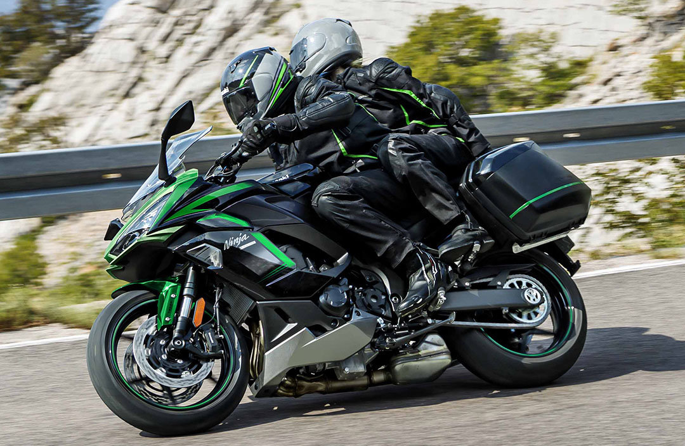
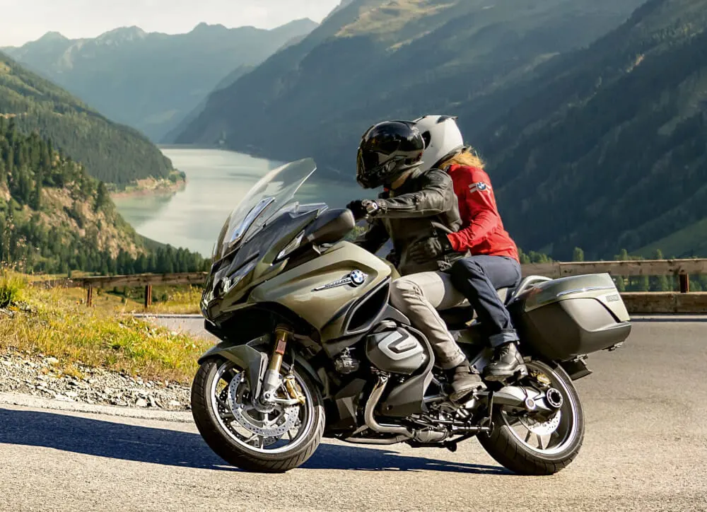
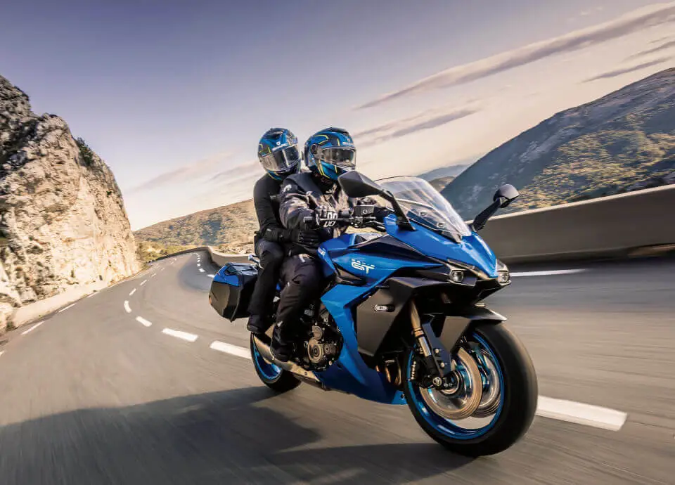

MOTOCYKLE SPORTOWO - TURYSTYCZNE
Motocykl sportowo-turystyczny (ang. sport touring) – motocykl zwany także szosowym będący połączeniem motocykla turystycznego i sportowego, z którym dzieli wygląd. Motocykle tej grupy charakteryzują się wysokimi osiągami jak motocykle sportowe jednak w przeciwieństwie do nich cechuje je komfort jazdy zbliżony do motocykli turystycznych: bardziej wyprostowana pozycja kierowcy, wygodniejsze siedzenie i zawieszenie zestrojone bardziej miękko. Motocykle tej grupy wykorzystywane są do tzw. szybkiej turystyki.


